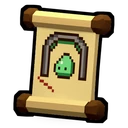
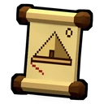

Charts take a planned trip straight to a region of the Endless Dungeon. They are drawn at the Cartographer's Table.


 Fields Chart
Fields Chart Camp Chart
Camp Chart Town Chart
Town Chart Cyclops Chart
Cyclops Chart Cultist Chart
Cultist Chart Dump Chart
Dump Chart Bowl Chart
Bowl Chart Storm Chart
Storm Chart Cave Chart
Cave Chart